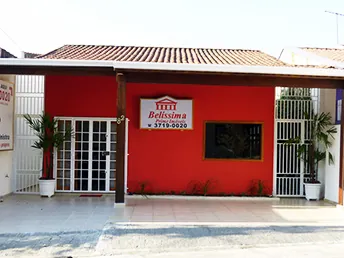

Imobiliárias
Belíssima Prime Imóveis – CRECI 19.636-J
A Belíssima Prime Imóveis possui uma trajetória de grandes realizações e bons negócios, sempre pautados na ÉTICA, no RESPEITO e na EFICIÊNCIA. Conheça o nosso novo conceito de atendimento… Ler mais
A Belíssima Prime Imóveis possui uma trajetória de grandes realizações e bons negócios, sempre pautados na ÉTICA, no RESPEITO e na EFICIÊNCIA. Conheça o nosso novo conceito de atendimento. Somos uma equipe formada para assessorar na busca do imóvel que você deseja, com um atendimento personalizado, como você merece. Além de um atendimento exclusivo, contamos com as opções dos imóveis mais desejados na Vila São Francisco, Parque dos Príncipes, Colinas de São Francisco e Parque Continental. Dos menores aos maiores. Dos clássicos aos modernos. Dos reformados aos que têm potencial para ficar incríveis. Com tudo isso, você não fará outra opção, senão a melhor! Além de tudo isso, possuimos departamento jurídico próprio, especializado em Direito Imobiliário, com o objetivo de dar suporte aos nossos clientes e colaboradores em todos os negócios imobiliários gerados em nossa empresa, ensejando a segurança jurídica que os negócios imobiliários necessitam.
- Endereço
- Rua Marechal Olímpio Mourão Filho, 82, Vila São Francisco - São Paulo/SP
- Horário
- Seg a Sex: 8h30 às 18h
- Telefones
- (11) 3719-0020